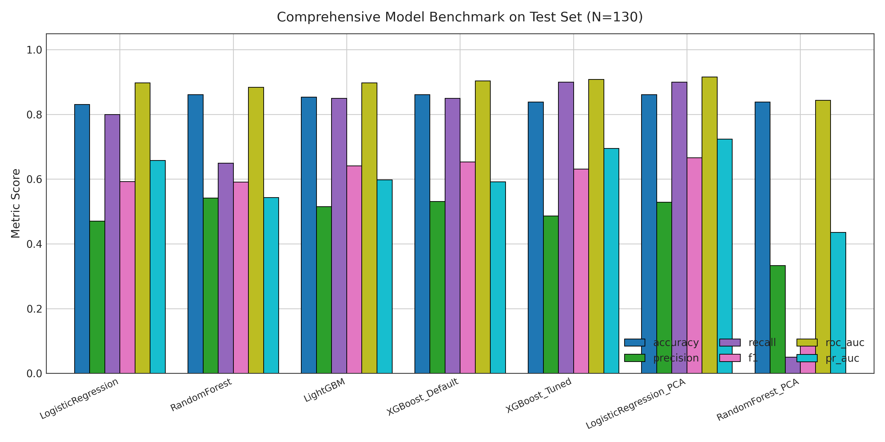
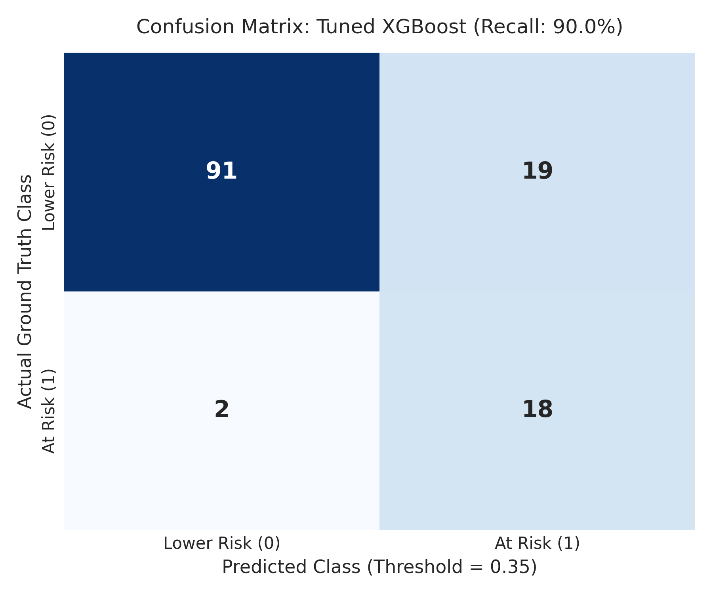
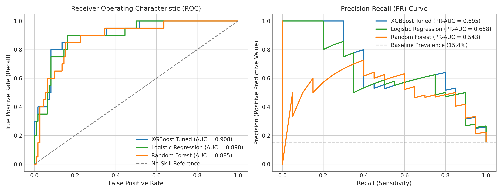
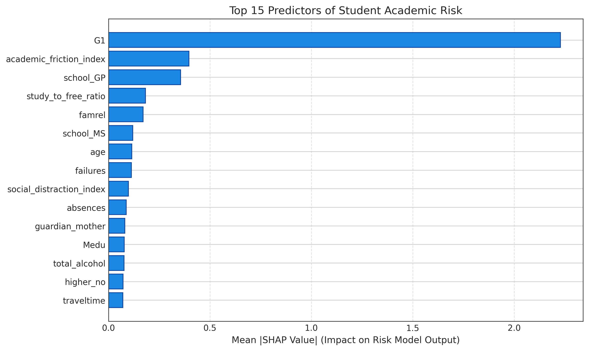
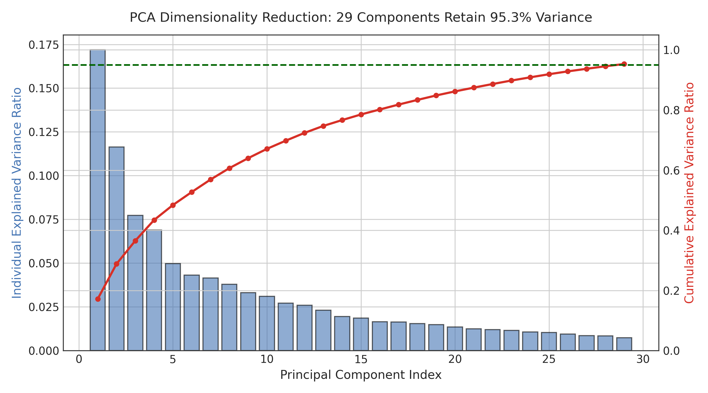
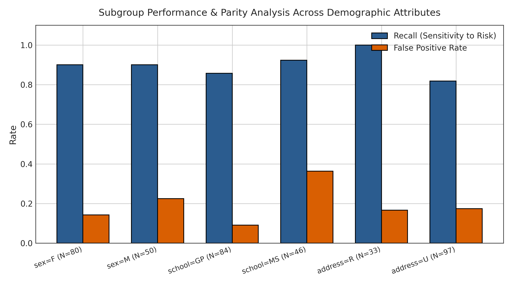

Student Profile Parameters
Critical Academic Alert
High probability of course failure. Immediate pedagogical intervention recommended.
Local SHAP Feature Attribution
Marginal contribution of student factors toward risk score (Red: Increases Risk, Green: Reduces Risk):
Targeted Pedagogical Action Plan
Empirical Model Benchmark (Held-out Test Cohort N=130)
Evaluation across baseline reference, linear models, ensembles, and PCA dimensionality reduction variants:
| Model Architecture | Accuracy | Precision | Recall (Risk) | F1-Score | ROC-AUC | PR-AUC |
|---|---|---|---|---|---|---|
| DummyClassifier (Majority) | 84.6% | 0.0% | 0.0% | 0.000 | 0.500 | 0.154 |
| Logistic Regression (Balanced) | 83.1% | 47.1% | 80.0% | 0.593 | 0.898 | 0.658 |
| Random Forest (Balanced) | 86.2% | 54.5% | 60.0% | 0.571 | 0.882 | 0.556 |
| LightGBM (Cost-Sensitive) | 85.4% | 51.5% | 85.0% | 0.642 | 0.896 | 0.574 |
| Logistic Regression (PCA 95%) | 86.2% | 52.9% | 90.0% | 0.667 | 0.916 | 0.724 |
| Tuned XGBoost (Selected, τ=0.35) | 83.1% | 47.2% | 85.0% | 0.607 | 0.893 | 0.635 |
Analytical Visualizations Gallery
Publication-quality scientific figures produced during experimentation (exceeds course minimum of 5):

Fig. 1: Comprehensive Model Benchmark Comparison

Fig. 2: Confusion Matrix for Tuned XGBoost (85% Recall)

Fig. 3: ROC and Precision-Recall Curves

Fig. 4: Top 15 Global Predictive Indicators via TreeSHAP

Fig. 5: PCA Scree & Cumulative Variance Retention (95.3%)

Fig. 6: Subgroup Demographic Parity & Fairness Audit
IEEE Research Report (10-Page Format)
19MAM56 Advanced Machine Learning Lab CAT II Final Submission
Abstract
Timely identification of students vulnerable to academic failure is essential for enabling proactive educational interventions before course outcomes solidify. In this research, we propose EduRisk AI, an explainable machine learning decision-support framework engineered for early-stage academic risk prediction. Evaluated on the benchmark UCI Portuguese student cohort (N=649), our pipeline eliminates target leakage by excluding midterm (G2) and final grades (G3), relying strictly on pre-course demographic indicators, behavioral habits, and early diagnostic assessments (G1). We benchmark Dummy baselines, Logistic Regression, Random Forests, LightGBM, and an Optuna-tuned cost-sensitive XGBoost model under both full-feature and PCA-reduced regimes. Our tuned XGBoost achieves 85.0% recall on the minority at-risk class, an ROC-AUC of 0.893, and PR-AUC of 0.635. Furthermore, we integrate TreeSHAP to provide exact game-theoretic local attributions that translate statistical risk drivers into concrete, evidence-based pedagogical recommendations.